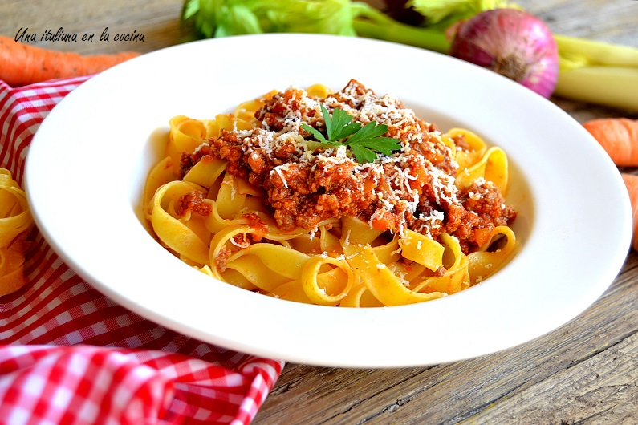

Ragu Bolognesa

Descripcion
Este maravilloso ragu es una muy buena salsa para cualquier tipo de fideicomiso. Copiada del mismisimo Pietro Sorba en una de sus ediciones en el bruto bruto bruto bruto show. Segun pietro, pese a que hay muchas recetas de bolognesa, esta es la manera tradicional de hacerla, como la hacen alla en el viejo continente.
La sagrada trinidad de zanahoria, apio y cebolla constituye gran parte de el salsamento italiano, y le da un sabor clasico a esta salsa, que es perfectamente freezable y recalentable sin que pierda su calidad en lo mas minimo. Las dimensiones del producto final han sido aumentados para producir una cantidad abundante con ese proposito. Y se viene la cominola kingote..
Ingredientes
- 1.2 kg de carne picada especial
- 450gr de panceta ahumada (esta maniero el precio pero tene en cuenta que rinde muchas comidas)
- 1 apio (usaremos 6 ramas aprox)
- 3 zanahorias medianas
- 1.5 lts de leche entera (es vital que sea entera)
- 750ml de caldo (mandale 2 cubitos papi hacela facil)
- 750gr de pure de tomate (tomate triturado aun mas optimo si tenes)
- Vino blanco
Pasos
- Picar panceta bien chica como si fuera carne picada y reservar. Picar todas las verduras lo mas chikito posible.
- Hervir la leche para separar la nata, una vez que salga esa gordura guardarla para mas adelante xq la vamos a usar
- Calentar una buena ollarda y dorar la panceta. Normalmente no ahce falta echarle aceite pero si le queres darle un toque, be my guest. Una vez que esta dorada agregar la carne picada y dale hasta que se dore todo.
- Retirar la carne un toque de la olla. Agregar un poco de manteca para cocinar las verdures, y agregar dichas verduras que para este punto estan chikitas. Darle un toque de sal a todo.
- Una vez que se doran las verduras volver a agregar la carne.
- Agregar caldo y pure de tomate,revolver bien y dejar hasta que empiece a "pipiare", que es cuando empieza ese burbujeo pesado plop plop que rico brodiii.
- Salpimentar y bajar a fuego mas que minimo. Cocinar 1 hr semi tapado, revolviendo ocasionalmente
- Agregar la mitad de la leche y cocinar 45 minutos mas.
- Agregar la otra mitad de la leche y cocinar otros 45'
- Agregar la nata que teniamos guardada y revolver bien hasta que se deshaga. Cocinar otros 5 minutos y estamos listos kinguitaaa <3.